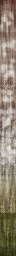
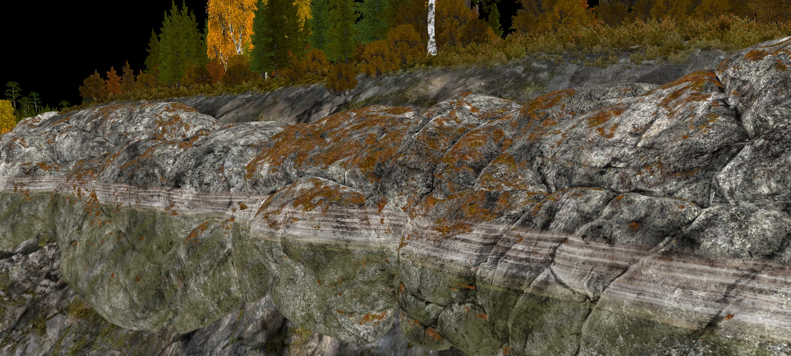

Shader Family: rendinst_layered
Overview
As of writing, the rendinst_layered family includes four shaders:
rendinst_layered: The foundational shader of the family.dynamic_layered: A dynamic version designed for destrs.rendinst_layered_atest: A version that supports alpha test for detail textures.rendinst_layered_hmap_blend: A version that includes heightmap blending functionality.
Let’s examine the parameters for each shader.
rendinst_layered
See also
For more information, see rendinst_layered shader.
dynamic_layered
This shader functions similarly to rendinst_layered, but it is optimized for
dynamic objects (destrs).
rendinst_layered_atest
This version supports alpha test for one or both detail textures.
Parameters
blended_atest: 0/1 (disabled/enabled)detail1_atest_weight: Alpha test level for the first detail texture (default: 127)detail2_atest_weight: Alpha test level for the second detail texture (default: 127)
rendinst_layered_lightmap
This is the standard rendinst_layered shader with added support for emissive
maps.
See also
For more information, see rendinst_layered_lightmap shader.
rendinst_layered_hmap_blend
This version introduces a heightmap blend feature that allows seamless transitions between the model and the terrain. It also supports projecting a clipmap using top-down projection onto the model. The clipmap is blended into the material in two layers: the first blends from the ground up to a specified height, and the second applies a Perlin noise mask on horizontal surfaces with positive normals, also modifiable by distance from the ground.
This shader is ideal for objects like rocks, cliffs, and debris piles that need to blend into the terrain or hide seams with the ground.
Below are screenshots illustrating the effect:
Without heightmap blend |
With heightmap blend |
|---|
{kind=link}
{kind=link}
Without clipmap projection |
With clipmap projection |
|---|
{kind=link}
{kind=link}
Parameters
Note
The hmp_blend_height parameter is deprecated! If you encounter it, please
remove it.
land_blend_dist: Specifies the height (in meters) for the first layer of clipmap blending, from the ground up. Default is 0.3 meters if not specified.land_perlin_height: Specifies the maximum height (in meters) for the second layer of clipmap projection, which uses Perlin noise and applies to horizontal surfaces with positive normals.land_perlin_scale: Controls the scale of the Perlin noise. A lower value results in coarser noise. Start with a value of 0.2 for tuning.land_perlin_blend: Defines the range (in meters) over which the Perlin noise fades from 1 to 0, starting from theland_blend_perlin_heightparameter. For example, ifland_blend_perlin_heightis set to 20 meters and you want the Perlin noise to begin fading 1 meter above the ground, setland_blend_perlin_blendto 19.land_blend_normal_start: The normal value at which the clipmap projection begins. Default is 1. A value greater than 1 reduces the opacity on perfectly horizontal surfaces.land_blend_normal_end: The normal value at which the clipmap projection ends. Default is 0.5.
Below is an illustration showing how the Perlin noise strength gradient operates
from land_blend_perlin_height (upper bound) to land_blend_perlin_blend
(lower bound):
{kind=link}
Salt Sediments
The rendinst_layered_hmap_blend shader is often used on rocks and cliffs. It
includes a feature called Salt Sediments, which simulates effects like waterline
marks, rust, or algae growth. This effect is illustrated below:
{kind=link}
In the example above, the following texture was used:
{kind=link}
This texture has an alpha channel that controls transparency. It replaces the combined albedo of the first detail texture and overlay.
Note
It only affects the first detail texture.
In the example, the effect is visible on the stone, but the orange moss (the second detail texture) remains unchanged.
The texture is subtracted using the AlbedoAO of the overlay and stretches infinitely downward below the water level. If this effect is unwanted, make the bottom two lines of pixels in the texture fully transparent.
{kind=link}
Parameters:
In level.blk, set the following:
saltSedimentsStart:r=-0.25: Starting height for the sediment effect.saltSedimentsEnd:r=4: Ending height for the sediment effect.saltSedimentsTile:r=15: Horizontal tiling scale for the texture, in meters.saltSedimentsTex:t="waterline_grdnt_a_tex_d": Name of the projected texture.
The shader also supports an optional command:
script:t="salt_sediments_opacity=1": Controls the multiplier for the texture’s alpha channel. You can use other values, but it’s generally unnecessary.